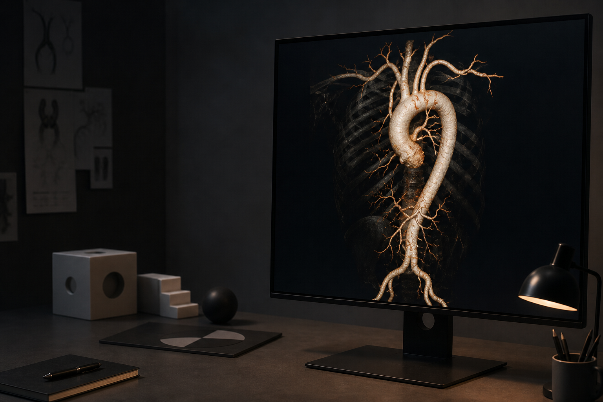

Research / 2025—
AI for aortic surgery.
My PhD work focuses on acute type A aortic dissection: a life-threatening tear in the wall of the aorta, the body’s main artery, where it rises from the heart.
- Role
- PhD candidate
- Organisation
- Amsterdam UMC
- Field
- Cardiothoracic surgery

The work
Imaging data, considered in clinical context.
Blood can enter through the tear and force apart the layers of the vessel wall. This can disrupt blood flow to the heart, brain, and other organs or cause the aorta to rupture, so the condition requires rapid diagnosis and usually emergency surgery.
My research investigates how information contained in medical imaging can be made more accessible and useful before and around that surgery.
The work sits between cardiothoracic surgery, radiology, and data science. The objective is not AI in isolation, but methods grounded in the clinical questions, data, and workflows they are intended to support.